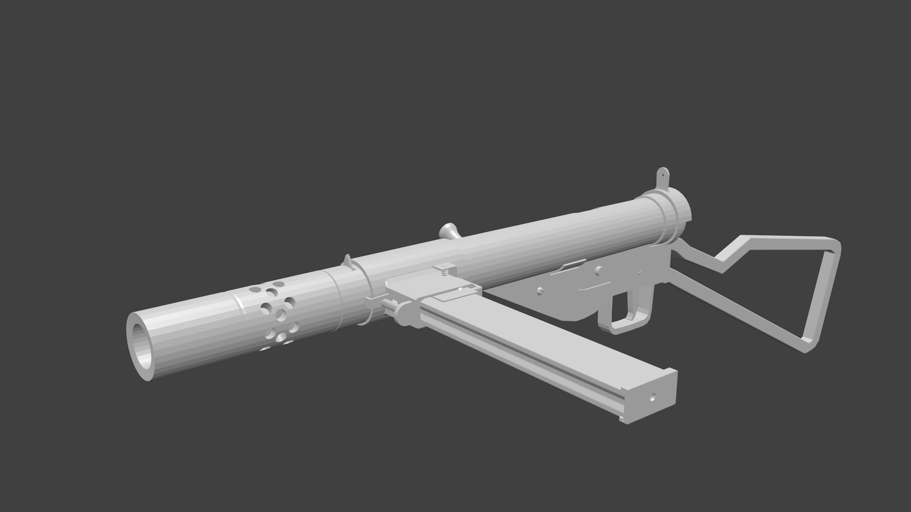

Enemy Territory - Remake
Since I started coding I dream about being able to pull off a remake of the classical Wolfenstein - Enemy Territory. Unfortunately, the amount of artistic work to be done exceeds my abilities. During the years I gave this project a few shots and with them I always learned something new.
Here is some weapon procedural animation (except the reload animation) that I created for the MP40 model
Sten submachine gun modelled in Blender
Substance Painter work in a helmet and an Thompson machine gun
This project also led me to study and compare character creation programs. Here is one my characters for the game.

Hopefully I will have more to share in the future...